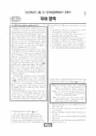

문제지

전국연합학력평가 · 시·도교육청 주관
2022년 3월 고1 학력평가 국어 1등급컷은 원점수 76점(추정), 표준점수 최고점은 164점입니다.
원점수 1등급컷은 공식 발표값이 아니라 EBSi·입시기관 값입니다. 등급별 값은 등급컷 표, 출처 구분은 데이터 원칙에 있습니다.

시험지를 먼저 풀어 보세요. 등급컷·표준점수·난이도는 흐리게 가려 뒀어요.
| 등급 | 원점수 | 표준점수 | 백분위 | 누적 |
|---|---|---|---|---|
| 1 | 76 | 136 | 95 | 4.66% |
| 2 | 68 | 125 | 88 | 12.18% |
| 3 | 60 | 115 | 76 | 24.52% |
| 4 | 52 | 104 | 59 | 41.47% |
| 5 | 44 | 94 | 39 | 61.18% |
| 6 | 37 | 85 | 23 | 77.96% |
| 7 | 30 | 76 | 11 | 89.65% |
| 8 | 23 | 66 | 4 | 96.77% |
등급별 컷 · 입시기관 3곳 원점수 추정 종합(EBSi·메가스터디·종로학원) · 만점 100점
| 등급 | 표준점수 이상 | 인원(명) | 비율 |
|---|---|---|---|
| 1 | 136 | 9,444 | 4.49% |
| 2 | 125 | 16,006 | 7.6% |
| 3 | 115 | 26,398 | 12.54% |
| 4 | 104 | 36,166 | 17.18% |
| 5 | 94 | 41,827 | 19.87% |
| 6 | 85 | 33,964 | 16.13% |
| 7 | 76 | 24,484 | 11.63% |
| 8 | 66 | 14,298 | 6.79% |
| 9 | 36 | 7,932 | 3.77% |
시·도교육청 공개 자료
출처: 시·도교육청이 공개한 전국연합학력평가 성적 분석·통계자료(공개 자료 보기).
EBSi 응답자 기준으로 가장 많이 틀린 문항은 19번(3점)이고, 오답률은 80.2%입니다. 상위 15문항 중 6문항은 정답보다 한 오답을 고른 사람이 더 많았습니다(19번: 정답 ③ 19.8%, ① 25.6%). 오답률 50%를 넘은 문항은 15개입니다.
| 순위 | 문항 | 배점 | 오답률 | 정답 | 많이 고른 오답 |
|---|---|---|---|---|---|
| 1 | 19번 | 3점 | 80.2% | ③ | ① 25.6% |
| 2 | 14번 | 2점 | 74.7% | ② | ④ 33.1% |
| 3 | 17번 | 2점 | 72.7% | ① | ⑤ 28.3% |
| 4 | 25번 | 3점 | 71.5% | ② | ③ 31.1% |
| 5 | 34번 | 2점 | 69.5% | ⑤ | ④ 37.2% |
| 6 | 30번 | 2점 | 68.8% | ④ | ③ 26.4% |
| 7 | 26번 | 2점 | 67.6% | ① | ③ 41.2% |
| 8 | 23번 | 2점 | 63.9% | ④ | ③ 21.2% |
| 9 | 28번 | 2점 | 61.7% | ⑤ | ③ 35.1% |
| 10 | 31번 | 2점 | 60.2% | ① | ⑤ 18.3% |
| 11 | 29번 | 3점 | 59.4% | ④ | ③ 22.1% |
| 12 | 35번 | 2점 | 58.2% | ⑤ | ③ 19.1% |
| 13 | 38번 | 2점 | 56.6% | ② | ④ 22.1% |
| 14 | 27번 | 2점 | 55.9% | ② | ④ 17.1% |
| 15 | 22번 | 2점 | 51.2% | ④ | ② 21.3% |
EBSi 가채점 응답자 기준 · 전 문항 중 오답률 상위 15문항
출처: EBSi 역대 등급컷·오답률 공개 화면. 가채점에 참여한 EBSi 이용자 응답이라 전체 응시자 정답률과는 다를 수 있습니다.
발행 기관: 시·도교육청(전국연합학력평가). 파일 위치: 이 사이트가 보관한 사본. 저작권은 발행 기관에 있습니다. 원본과 다르거나 게시 중단이 필요하면 연락처로 알려 주세요. 등급컷 출처 구분은 데이터 원칙에서 설명합니다.
막대 색은 역대 대비 난이도 · 진한 막대가 이 시험 · 막대를 누르면 그 회차로 이동
| 회차 | 1등급컷 | 표점 최고 | 1등급 표점 | 난이도 |
|---|---|---|---|---|
| 3월 학평2022년 고1이 시험 | 76 | 164 | 136 | 매우 어려움 |
| 11월 학평2021년 고1 | 88 | 146 | 134 | 쉬움 |
| 6월 학평2021년 고1 | 92 | 140 | 133 | 매우 쉬움 |
| 3월 학평2021년 고1 | 80 | 160 | 135 | 어려움 |
중학교 범위에서 출제된 국어는 교육청 채점 결과 1등급 구분 표준점수가 136점, 최고점이 164점이었고 최고점자는 2명이었습니다. EBSi 가채점 응답자 기준 오답률 50%를 넘은 문항이 15개였습니다.
16~20번은 사물의 가치가 교환가치로 결정된다며 소비를 생산에 종속된 현상으로 본 마르크스와, 욕망의 대상인 기호가 지닌 기호가치가 경제적 가치를 결정한다며 자본주의를 소비 우위 사회로 본 보드리야르를 다룬 지문입니다. 가장 많이 틀린 19번(3점, 80.2%)은 보드리야르의 관점으로 <보기>를 이해하는 문항, 17번(72.7%)은 기표와 기의로 이루어진 기호 체계로 [A]를 이해하는 문항이었습니다.
21~25번은 이데아계와 현상계를 나눈 플라톤(가)과, 어린아이가 성인으로 자라는 변화를 설명할 수 없다며 이데아계를 부정한 아리스토텔레스(나)를 엮은 지문으로, 두 사람이 <보기>에 보일 반응을 고르는 25번(71.5%)이 어려웠습니다. 26~30번은 송신기가 오류 검출 부호를 붙여 보내고 수신기가 오류를 검사하는 컴퓨터 네트워크 지문으로 26번(67.6%), 30번(68.8%), 28번(61.7%)이 모두 60%를 넘었습니다.
문법은 서술어에 따라 달라지는 필수 문장 성분을 다뤘고, <보기 2>에서 해당 단어를 모두 고르는 14번(74.7%)은 응답의 33.1%가 같은 오답(4번)을 골랐습니다.
문학은 김영랑 「사개 틀린 고풍의 툇마루에」와 정진규 「따뜻한 달걀」(31~33번), 송순 「면앙정가」와 백석의 수필 「가재미ㆍ나귀」(34~37번), 밭떼기 채소 장수 권중만이 드나드는 동네를 그린 이문구 「산 너머 남촌」(38~41번), 춘향 어미가 신관 사또를 원망하는 「춘향전」(42~45번)이었습니다. (가), (나)를 비교하는 34번(69.5%)이 문학에서 가장 많이 틀린 문항이었습니다.
화법·작문은 영구 동토층이 녹는 문제를 알린 환경 동아리 발표(1~3번), 청소년의 SNS 이용 실태를 다룬 교지 글(4~7번), 『페스트』 독서 감상문(8~10번)이었습니다.